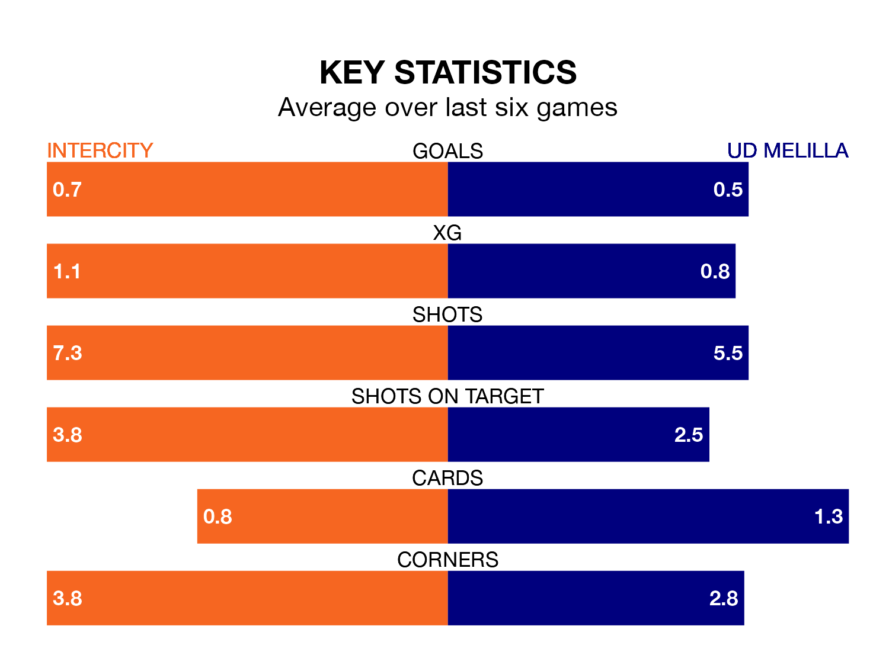

UD Melilla make the journey to play Intercity on early Sunday looking to pick up points to end their three-game losing streak.
Melilla's struggles have left them with six points from their last six Primera Division RFEF Group 2 matches, while their opponents have earned the same number from a possible 18.
Melilla are 19th in the table after 26 games, of which they have won five and drawn four, earning 19 points.
Intercity are nine places ahead of the away team in 10th, with nine wins and eight draws putting them on 35 points.
With 13 goals in 26 games so far this season, Melilla are the league's lowest scorers with 0.5 goals per game. And they are conceding more than average, letting in 37 goals at a rate of 1.4 per game.
The hosts, meanwhile, are average scorers, with 1.1 goals per game. They have conceded 1.2 goals per game.
In Emilio Nsue López, Intercity have one of the league's most on-form strikers so far this season. He has notched seven goals in 16 appearances, to sit sixth in the scoring charts.
His goal rate of one every 148 minutes is much quicker than that of Daniel García Beltrán, Melilla's top scorer with a goal every 332 minutes, and a total of five goals in 22 games.
In the last three years, Intercity and Melilla have played each other on three occasions. Intercity won one of them and they drew the other.
Their last meeting was on October 8, when Intercity won 2-1 away.
Intercity's last match was on Sunday, a 2-1 loss against Ceuta, with Oriol Soldevila Puig getting the goal for Intercity.
Melilla lost 1-0 against Real Madrid B last time out, also on March 3.
Updated: 09:34 (UTC), 08/03/24